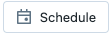
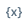

Databricks notebook interface and controls
The notebook toolbar includes menus and icons that you can use to manage and edit the notebook.

Next to the notebook name are buttons that let you change the default language of the notebook and, if the notebook is included in a Databricks Repo, open the Git dialog.
To view previous versions of the notebook, click the “Last edit…” message to the right of the menus.
Notebook cells
Notebooks contain a collection of two types of cells: code cells and markdown cells. Code cells contain runnable code. Markdown cells contain markdown code that renders into text and graphics when the cell is executed and can be used to document or illustrate your code. You can add or remove cells to your notebook to structure your work.
You can run a single cell, a group of cells, or run the whole notebook at once. A notebook cell can contain at most 10MB. Notebook cell output is limited to 20MB.
Notebook toolbar icons and buttons
The icons and buttons at the right of the toolbar are described in the following table:
Icon |
Description |
|---|---|
|
Run all cells or stop execution. The name of this button changes depending on the state of the notebook. |
|
Open compute selector. When the notebook is connected to a cluster or SQL warehouse, this button shows the name of the compute resource. |
 |
Open job scheduler. |
|
Open Delta Live Tables. This button appears only if the notebook is part of a Delta Live Tables pipeline. |
|
Open permissions dialog. |

Right sidebar actions
Several actions are available from the notebook’s right sidebar, as described in the following table:
Icon |
Description |
|---|---|
|
Open notebook comments. |
|
|
|
Open notebook version history. |
 |
Open variable explorer. (Available for Python variables with Databricks Runtime 12.1 and above.) |
|
Open the Python environment panel. This panel shows all Python libraries available to the notebook, including notebook-scoped libraries, cluster libraries, and libraries included in the Databricks Runtime. Available only when the notebook is attached to a cluster. |


Browse data
Preview
This feature is in Public Preview.
To explore tables and volumes available to use in the notebook, click at the left side of the notebook to open the schema browser. See Browse data for more details.
Cell actions menu
The cell actions  menu lets you cut, copy, and paste cells, move cells around in the notebook, add a title to the cell, and hide code or results.
menu lets you cut, copy, and paste cells, move cells around in the notebook, add a title to the cell, and hide code or results.
From this menu you can also run code cells:
Menu items to hide a cell or delete a cell also appear.
For Markdown cells, an option to add the cell to a dashboard appears. For more information, see Dashboards in notebooks.
Create cells
To create a new cell, hover over a cell at the top or bottom and click the  icon. You can also use the notebook cell menu: click
icon. You can also use the notebook cell menu: click  and select Add Cell Above or Add Cell Below.
and select Add Cell Above or Add Cell Below.
For a code cell, just type code into the cell. To create a markdown cell, select Markdown from the cell’s language button or type %md at the top of the cell. The contents of markdown cells are rendered into HTML. For example, this snippet contains markup for a level-one heading:
%md # Hello This is a Title
It is rendered as a HTML title:
Cut, copy, and paste cells
There are several options to cut and copy cells:
Use the cell actions menu
at the right of the cell. Click  and select Cut Cell or Copy Cell.
and select Cut Cell or Copy Cell.Use keyboard shortcuts:
Command-XorCtrl-Xto cut andCommand-CorCtrl-Cto copy.Use the Edit menu at the top of the notebook. Select Cut or Copy.
After you cut or copy cells, you can paste those cells elsewhere in the notebook, into a different notebook, or into a notebook in a different browser tab or window. To paste cells, use the keyboard shortcut Command-V or Ctrl-V. The cells are pasted below the current cell.
You can use the keyboard shortcut Command-Z or Ctrl-Z to undo cut or paste actions.
Note
If you are using Safari, you must use the keyboard shortcuts.
To cut and paste a cell, click
from the cell actions menu and select Cut Cell. Then, select Paste Above or Paste Below from the cell actions menu of another cell.You can restore cut cells using Edit > Undo Cut Cells.
To select adjacent cells, click in a Markdown cell and then use Shift + Up or Down to select the cells above or below it. Use the edit menu to copy, cut, paste, or delete the selected cells as a group. To select all cells, select Edit > Select All Cells or use the command mode shortcut Cmd+A.
Notebook table of contents
To display an automatically generated table of contents, click the icon at the upper left of the notebook (between the left sidebar and the topmost cell). The table of contents is generated from the Markdown headings used in the notebook.
Cell display options
There are three display options for notebooks:
Standard view: results are displayed immediately after code cells.
Results only: only results are displayed.
Side-by-side: code and results cells are displayed side by side.
Use the View menu to select a display option.
Line and command numbers
To show or hide line numbers or command numbers, select Line numbers or Command numbers from the View menu. For line numbers, you can also use the keyboard shortcut Control+L.
If you enable line or command numbers, Databricks saves your preference and shows them in all of your other notebooks for that browser.
Command numbers above cells link to that specific command. If you click the command number for a cell, it updates your URL to be anchored to that command. If you want to link to a specific command in your notebook, right-click the command number and choose copy link address.
View notebooks in dark mode
You can choose to display notebooks in dark mode. To turn dark mode on or off, select View > Theme and select Light theme or Dark theme.
Hide and show cell content
Cell content consists of cell code and the result of running the cell. You can hide and show the cell code and result using the cell actions menu at the top right of the cell.
To hide cell code:
Click
and select Hide Code
To hide and show the cell result, do any of the following:
Click
and select Hide ResultSelect
Type Esc > Shift + o
To show hidden cell code or results, click the Show links:
See also Collapsible headings.
Collapsible headings
Cells that appear after cells containing Markdown headings can be collapsed into the heading cell. The following image shows a level-one heading called Heading 1 with the following two cells collapsed into it.
To expand and collapse headings, click the + and -.
Also see Hide and show cell content.
To expand or collapse cells after cells containing Markdown headings throughout the notebook, select Collapse all headings from the View menu.
Compute resources for notebooks
This section covers the options for notebook compute resources. You can run a notebook on a Databricks cluster, or, for SQL commands, you also have the option to use a SQL warehouse, a type of compute that is optimized for SQL analytics.
Attach a notebook to a cluster
To attach a notebook to a cluster, you need the Can Attach To cluster-level permission.
Important
As long as a notebook is attached to a cluster, any user with the Can Run permission on the notebook has implicit permission to access the cluster.
To attach a notebook to a cluster, click the compute selector in the notebook toolbar and select a cluster from the dropdown menu.
The menu shows a selection of clusters that you have used recently or that are currently running.
To select from all available clusters, click More…. Click on the cluster name to display a dropdown menu, and select an existing cluster.
You can also create a new cluster by selecting Create new resource… from the dropdown menu.
Important
An attached notebook has the following Apache Spark variables defined.
Class |
Variable Name |
|---|---|
|
|
|
|
|
|
Do not create a SparkSession, SparkContext, or SQLContext. Doing so will lead to inconsistent behavior.
Use a notebook with a SQL warehouse
Preview
This feature is in Public Preview.
When a notebook is attached to a SQL warehouse, you can run SQL and markdown cells. All other cells (Python, R, or other languages) are ignored. SQL cells executed on a SQL warehouse appear in the SQL warehouse’s query history. The user who ran a query can view the query profile from the notebook by clicking the elapsed time at the bottom of the output.
Running a notebook requires a Pro or Serverless SQL warehouse. You must have access to the workspace and the SQL warehouse.
To attach a notebook to a SQL warehouse do the following:
Click the compute selector in the notebook toolbar. The dropdown menu shows compute resources that are currently running or that you have used recently. SQL warehouses are marked with .
From the menu, select a SQL warehouse.
To see all available SQL warehouses, select More… from the dropdown menu. A dialog appears showing compute resources available for the notebook. Select SQL Warehouse, choose the warehouse you want to use, and click Attach.
Limitations of SQL warehouses include:
When attached to a SQL warehouse, execution contexts have an idle timeout of 8 hours.
The maximum size for returned results is 10,000 rows or 2MB, whichever is smaller.
You cannot run workflows or scheduled jobs on a SQL warehouse.
Notebook parameters and widgets are not supported when a notebook is attached to a SQL warehouse.
Detach a notebook
To detach a notebook from a compute resource, click the compute selector in the notebook toolbar and hover over the attached cluster or SQL warehouse in the list to display a side menu. From the side menu, select Detach.
You can also detach notebooks from a cluster using the Notebooks tab on the cluster details page.
When you detach a notebook, the execution context is removed and all computed variable values are cleared from the notebook.
Tip
Databricks recommends that you detach unused notebooks from clusters. This frees up memory space on the driver.